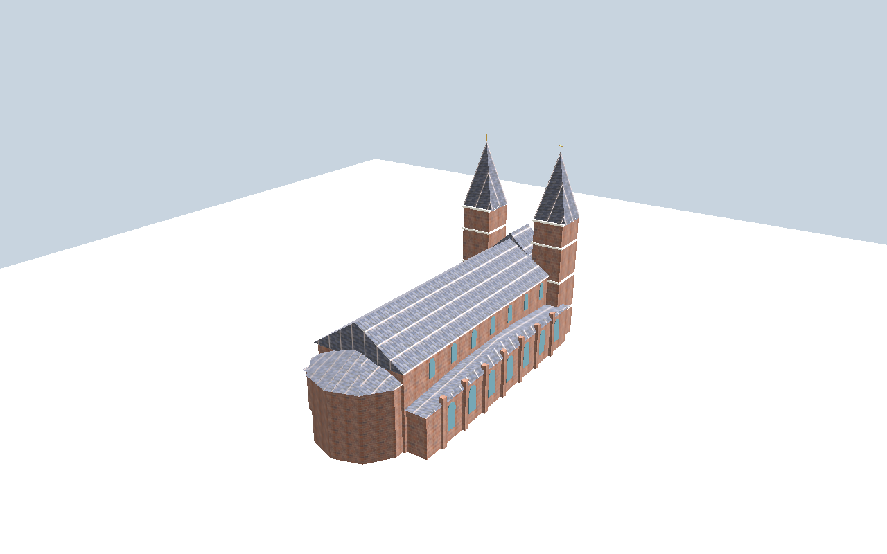
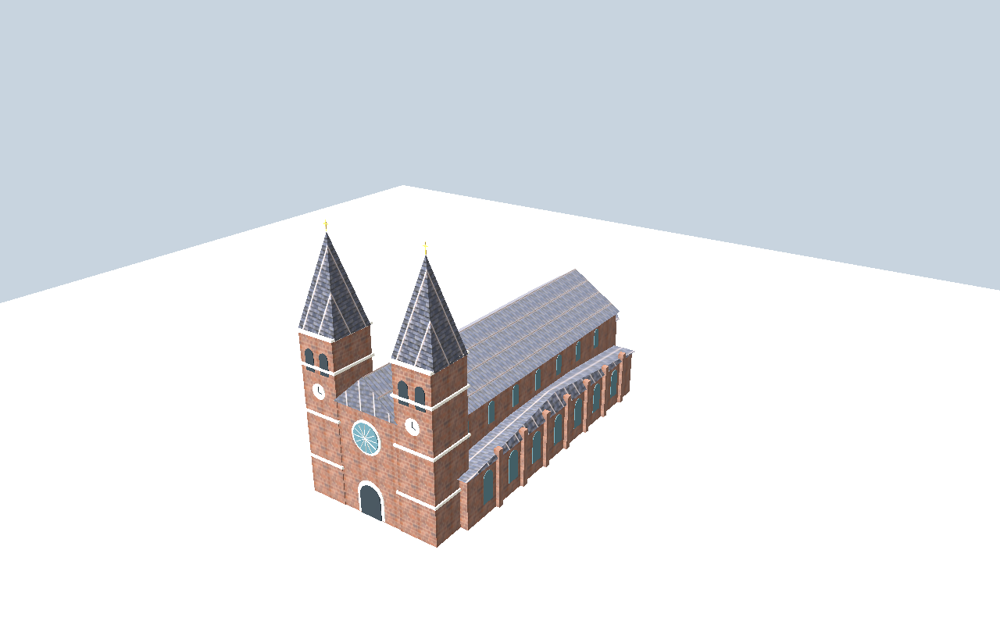
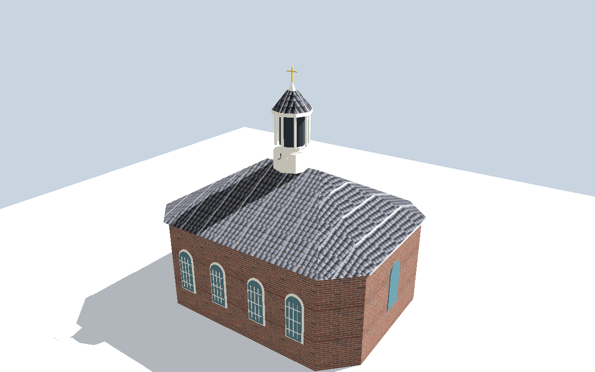

Voer dit commando uit in een terminal binnen een grafische desktopsessie. Het werkt vanuit iedere werkmap en bewaart nieuwe beelden in een aparte runmap.
Deze Godot-pagina opnieuw maken
python3 /home/anton/Documents/sites/boracart/game/tools/capture_step.py --project GAME-10001 --step stap-25-uithoorn-landmarksNative Godot · capture niet voltooid · metadata · log
Er zijn nog geen volledige enginebeelden. Gebruik het commando bovenaan deze pagina vanuit een grafische desktopterminal.
27.74, 280.1549) UITHOORN CAPTURE rechthuis-v2-racecamera UITHOORN FRAME schanskerk-v2-omgeving image=(632, 395) viewport=(1280.0, 800.0) current=true target_pixel=(640.0, 400.0) camera=(63.60146, 63.31293, 234.9534) UITHOORN CAPTURE schanskerk-v2-omgeving UITHOORN RACE schanskerk-v2 progress=319.704369214363 score=-381.244889587164 UITHOORN FRAME schanskerk-v2-racecamera image=(632, 395) viewport=(1280.0, 800.0) current=true target_pixel=(612.8252, 357.7476) camera=(-0.162745, 27.74, 250.0227) UITHOORN CAPTURE schanskerk-v2-racecamera UITHOORN FRAME fort-aan-de-drecht-v2-omgeving image=(632, 395) viewport=(1280.0, 800.0) current=true target_pixel=(640.0, 399.9999) camera=(-135.3108, 99.25752, -284.9172) UITHOORN CAPTURE fort-aan-de-drecht-v2-omgeving UITHOORN RACE fort-aan-de-drecht-v2 progress=1470.64009838607 score=-368.767756354958 UITHOORN FRAME fort-aan-de-drecht-v2-racecamera image=(632, 395) viewport=(1280.0, 800.0) current=true target_pixel=(668.1492, 495.2178) camera=(-40.22373, 27.74, -254.7973) UITHOORN CAPTURE fort-aan-de-drecht-v2-racecamera UITHOORN FRAME irenebrug-v2-omgeving image=(632, 395) viewport=(1280.0, 800.0) current=true target_pixel=(640.0, 399.9999) camera=(-35.49164, 59.06806, 100.8639) UITHOORN CAPTURE irenebrug-v2-omgeving UITHOORN RACE irenebrug-v2 progress=191.822621528618 score=215.820126401708 UITHOORN FRAME irenebrug-v2-racecamera image=(632, 395) viewport=(1280.0, 800.0) current=true target_pixel=(309.0611, 375.3344) camera=(-117.5868, 27.74, 294.7798) UITHOORN CAPTURE irenebrug-v2-racecamera UITHOORN FRAME thamerkerk-v2-omgeving image=(632, 395) viewport=(1280.0, 800.0) current=true target_pixel=(640.0001, 400.0) camera=(196.558, 24.02061, -281.5251) UITHOORN CAPTURE thamerkerk-v2-omgeving UITHOORN RACE thamerkerk-v2 progress=866.75406764783 score=-47.622312512733 UITHOORN FRAME thamerkerk-v2-racecamera image=(632, 395) viewport=(1280.0, 800.0) current=true target_pixel=(536.354, 332.4074) camera=(253.5258, 27.74, 33.627) UITHOORN CAPTURE thamerkerk-v2-racecamera UITHOORN FRAME de-hoeksteen-v2-omgeving image=(632, 395) viewport=(1280.0, 800.0) current=true target_pixel=(640.0, 400.0) camera=(-231.7021, 30.58891, 47.98239) UITHOORN CAPTURE de-hoeksteen-v2-omgeving UITHOORN RACE de-hoeksteen-v2 progress=1889.80804913379 score=-131.576397850923 UITHOORN FRAME de-hoeksteen-v2-racecamera image=(632, 395) viewport=(1280.0, 800.0) current=true target_pixel=(400.7224, 494.8366) camera=(-253.5258, 27.74, -78.8475) UITHOORN CAPTURE de-hoeksteen-v2-racecamera UITHOORN FRAME uithoorn-v2-overzicht image=(632, 395) viewport=(1280.0, 800.0) current=true target_pixel=(640.0, 399.9999) camera=(249.3375, 660.1324, 460.282) UITHOORN CAPTURE uithoorn-v2-overzicht UITHOORN VIEWS=38 failures=26 setup_only=false ERROR: Texture with GL ID of 46: leaked 87380 bytes. at: ~Utilities (drivers/gles3/storage/utilities.cpp:82) ERROR: Texture with GL ID of 50: leaked 87380 bytes. at: ~Utilities (drivers/gles3/storage/utilities.cpp:82)


